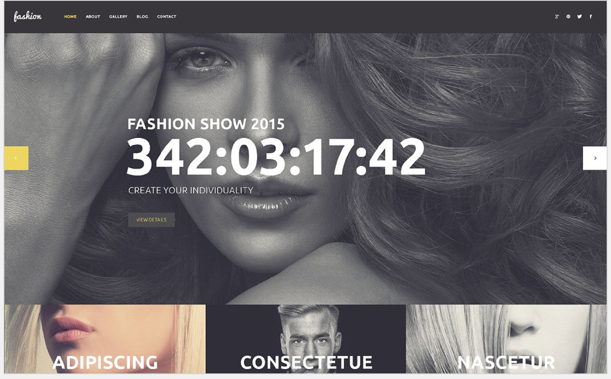
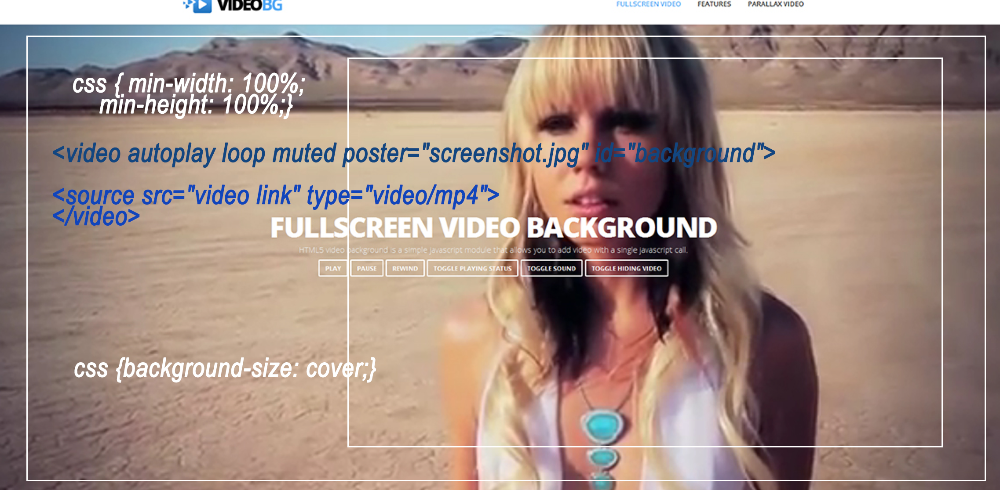

About
Hi my name is Giovanni Galvis.
I currently live in Miami, FL and enjoy learing from school online.
This is a very important class for me, so I hope I do well.
I hope to become a better developer by learning as much as I can and having a deep understanding of it all.
Call To Action
What I hope to practice/learn?
The first component is the video background CTA, because it more eye catching than a single image or slider. A call to action is important because it is a response you want users to complete.
How this relates to what I have/will learn in WDD.
This is one of the main features at site of the company where I currently work. It is very popular feature on all the premium wordpress themes that I have seen. It is important to capture the visitors (users) attention as soon as they land on our site.
How might I build this?
- Create the component using HTML5 < video > tag
- Use CSS to make fullscreen
- Resouces: http://thenewcode.com/777/Create-Fullscreen-HTML5-Page-Background-Video
Drop Down Menu
What I hope to practice/learn?
I know that drop down menu's are necessary for sites that have many pages. I have not mastered how to make a drop down menu from scratch, so I hope this will be the opporturnity to learn it all.
How this relates to what I have/will learn in WDD.
The main objective is to have knowledge of all necessary components for a successful website.
How might I build this?
- Create a an unordered list
- To create a sub-menu next another list in one of the list items.
- Then add your css to to display main menu with inline-block, and submenu display: block;.
- Resouces: http://inspirationalpixels.com/tutorials/creating-a-dropdown-menu-with-html-css
Footer
What I hope to practice/learn?
I hope to learn more about how to make better footer's for website because it's an important component of a website.
How this relates to what I have/will learn in WDD.
Footer area is important for many reasons because a client after seeing the main content might want to contact you.Social media, an email form and contact information is usually located in the footer. Footers attached to the bottom of the page are known as "Sticky Footers".
How might I build this?
- Create the component using HTML5 < footer > tag
- Add your social media icons, contact information and/or recent blogs/posts
- Add css to your < footer > tag to style it
- Resouces: http://www.w3schools.com/tags/tag_footer.asp
Meet The Team
What I hope to practice/learn?
I hope to learn more about the styling part of how to edit the team member photos and add links to their social media profile.
How this relates to what I have/will learn in WDD.
Many companies use this feature on their sites to make the visitors feel comfortable and feel they are working with professionals. According to Smashing Magazine "It adds a personal touch to the company and can lend trust to visitors."
How might I build this?
- Create a component with < section >
- Section title using H1 tag
- Identify team members using list tag.
- Show them using img tags for their profile pics
- Resouces: http://www.smashingmagazine.com/2010/06/meet-the-team-pages-examples-and-trends/
Header
What I hope to practice/learn?
I hope to improve my skills for making better headers for usability purposes.
How this relates to what I have/will learn in WDD.
This is the first part of the site the user gets to see, so it is the first impression it makes on a potential client.
How might I build this?
- Create the component using HTML5 < header > tag
- Add your hero image using an img tag
- Add your < nav > tag for your menu
- Apply CSS to your tags
- Resouces: http://www.cssgirl.com/resources/2012/01/15/100-full-width-header-and-footer-with-centered-content-revisited-again/

Featured - Video Background CTA

What I hope to practice/learn?
My featured component that I really am excited about is the video background just cause it is great for attention.
How this relates to what I have/will learn in WDD.
Using a video background is really going to improve your site's look and feel in a positive way.
How might I build this?